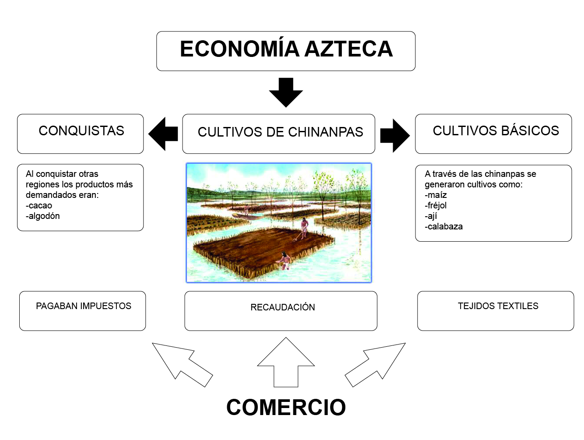

Comercio
SISTEMA DE NUMERACIÓN
Los Aztecas y sus número de maíz
El sistema de numeración azteca era vigesimal y de tipo aditivo. Se empleaba cuatro símbolos básicos para los principales números. Dado que la escritura era ideográfica, como la egipcia antigua, los símbolos numéricos aztecas también lo eran.
Como el maíz era el principal cultivo de esta civilización, los símbolos numéricos estaban inspirados en ese cereal. Así, el 1 era la vaina de la semilla de maíz; el 20 estaba representado por la bandera empleada para marcar los límites de un terreno; para el 400, la figura era una planta de maíz o una pluma, y para el 8 000, un costal.
Aritmética Propia
Por otra parte, los aztecas desarrollaron un sistema de fracciones de unidad que les permitió calcular áreas de superficies, en especial de terrenos agrícolas e inmobiliarios. No usaban cifras decimales, sino un sistema similar al inglés en el que los pies y las pulgadas se pueden sumar por separado, pero también se puede convertir 12 pulgadas en un pie.
Para medir un terreno cuadrado, se valieron de un sistema lado por lado; para áreas con formas complicadas, como pentágonos y hexágonos, tomaban un par de lados opuestos para promediarlos, y multiplicaban el resultante por uno de los otros lados. En casos más complejos, dividían los cuadriláteros en dos triángulos, usaban la regla de base y dividían el producto entre dos para calcular el área.

Mapa de tierras de Oztoticpac. Los aztecas utilizaban diferentes figuras para definir las dimensiones de las tierras.

Detalle de una página del códice de Santa María Asunción. En este documento, se ve como los aztecas llevaban un registro de las áreas de tierras para calcular los impuestos que debían pagar.

Los aztecas empleaban los números de manera intuitiva. Si querían representar 100 hombres, lo que hacían era cinco banderas encima de un hombre.